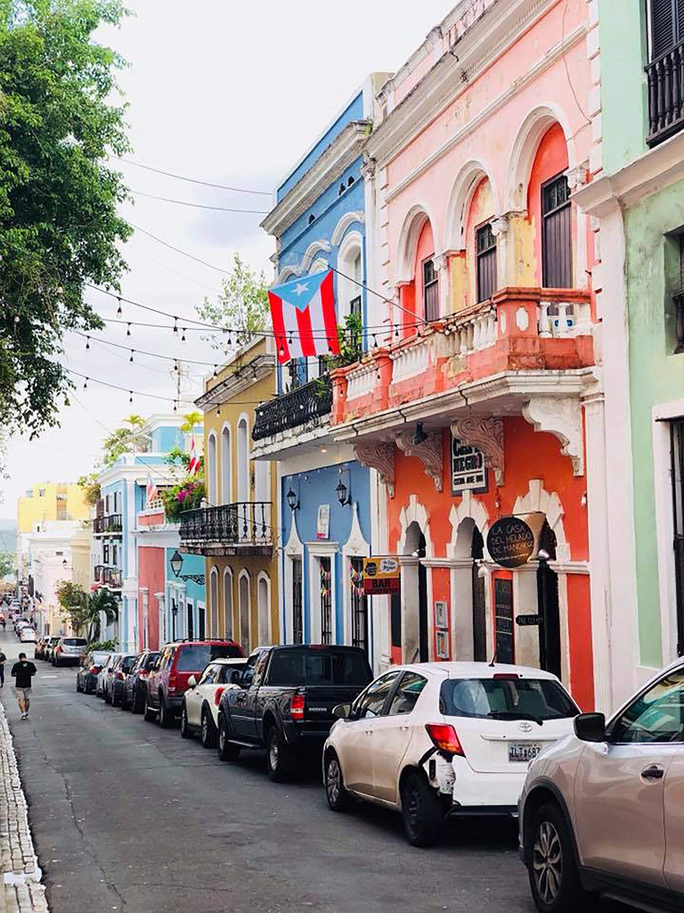
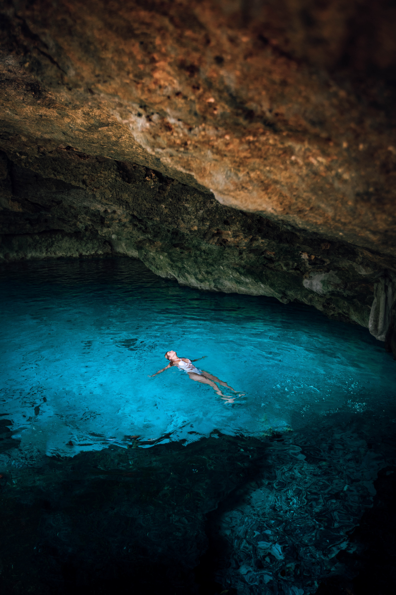

Joyce's Travel Blog
I am a girl who codes from Basking Ridge, NJ. I attend Newark Academy and will be in the 12th grade this fall. I live at home with my mom, my dad, and my younger sister Jolene. When I'm not coding, you can find me travelling around! The following are three destinations I travelled to in the past year.
Santa Barbara, California: I attended a research camp here at the University of California, Santa Barbara. I bought my favorite sweatshirt here!

Puerto Rico: I came here last winter break and the weather here was amazing. My favorite activity was wandering through the old city’s remains.

Cancun, Mexico: My family travelled here for spring break to enjoy the beach and sun. My favorite activity was swimming in the lagoon.
